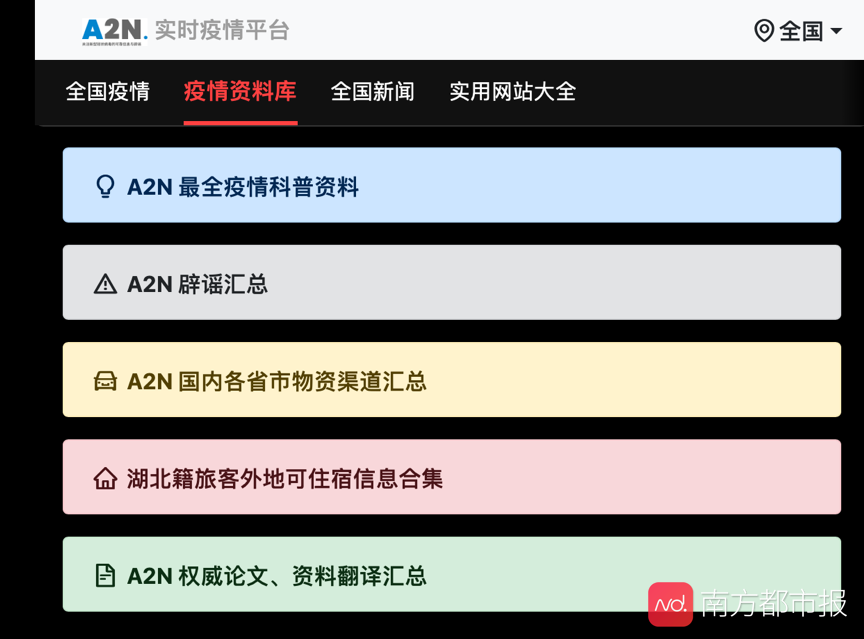
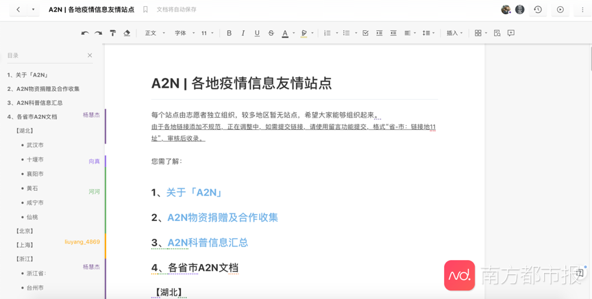
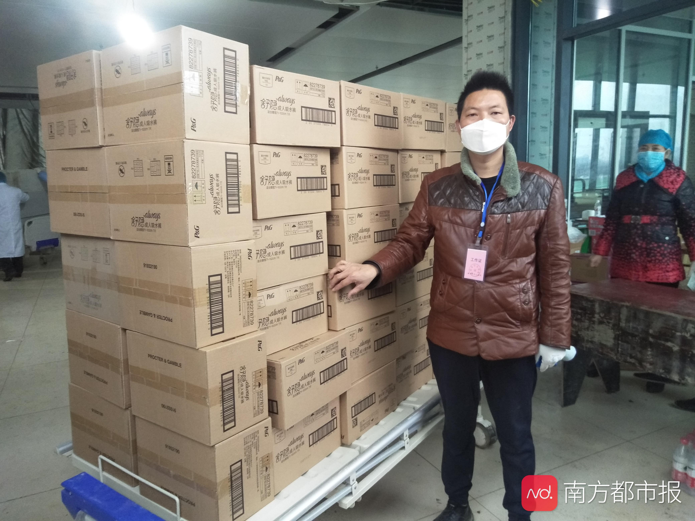

援助武汉周边地区的志愿者们
原文链接 备份链接 医院人员领取志愿者送的医疗物资。受访者供图 文 | 李晓芳 编辑 | 胡大旗 新型冠状病毒肺炎疫情扩大后，湖北省内的医院医疗物资告急。从1月23日开始，很多医院自行发布物资募捐公告。几乎同一时间，各种民间力量行动起来， …
2020年1月22日，一个叫A2N的互联网志愿者群体发布了一份长达4000多字的辟谣文稿，当时，街上的人大多还没有戴起口罩，有人在慌乱中买回成堆的板蓝根，还有人相信喝酒、抽烟能够抵御病毒……两天后，这份辟谣文稿的阅览量达到100万次，这个以90后为主体的志愿者小组也在几天时间内迅速发展起来。
“从成立、专业化分工到落地执行，时间没有超过1周”，现在，A2N在互联网上拥有全国各省市和海外的35个微信社群、23个不同省市的地方在线协作文档和一个实时疫情网站，分成翻译组、辟谣组、科普组、物资组、文档组等各类志愿小组，他们的工作也从疫情辟谣扩展到国外文献翻译、科学知识普及、物资信息联络匹配等全方位的志愿者群体。
1
“网上铺天盖地的信息，却不知道该相信什么”
A2N（Anti-2019-nCoV，抗击新型冠状病毒）志愿小组发起人杨高杰本来是生活在武汉的创业者。1月18日，他听人说“武汉有新冠病毒”，当天又在朋友圈看到有人分享一篇论文，文中推断武汉实际感染人数可能不低。于是，杨高杰开始关注这次疫情。1月22日，大学校友找到他，说看到谣言很多，希望一起做一点辟谣的工作，杨高杰立刻答应了。
建立辟谣微信群的同时，杨高杰在1月22日还创建了一份在线协作文档，希望能把一些值得关注的信息源和求证过的辟谣信息放到文档中。他当时大概没有想到，此后会有那么多人加入这份文档的协作编辑行列，短短两天内，文档阅读量达到了100万次。
辟谣微信群的发展也超乎想象得快。 “的确是铺天盖地的消息，我也不知道该去相信什么东西”，95后安松松因同样的原因在1月23日加入微信群，并在此后负责A2N的地方社群管理。
一开始，安松松和其他核心参与者会先建好各省市微信群，将群二维码发布在社交平台上，招募全国各地的志愿者，随后会逐一与加入的志愿者沟通，了解背景、意向和活跃度等，再组建出各地方小组的管理团队。
不同省市的微信群一个一个建立，大量想要在疫情中帮忙的网友加入，“那一阵子我记得我的嗓子都哑了，因为每天要跟大家聊天”， 安松松告诉南都记者，总部管理组更多充当志愿引导和信息标准化工作，帮助新加入者快速上手，其余多由地方自行发挥，以A2N山东省地方社群为例，所属志愿者多为IT背景的大学生，他们自行搭建了网站发布当地信息。
“此后如竟没有炬火，我便是唯一的光”，这句话来自鲁迅的《热风》，列在了所有A2N在线协作文档中。
“这次疫情，我们便是抱着‘做能做的事，发能发的声’想法开始行动的”，杨高杰说。


2
有人提出把物资留给最需要的人 也有人希望通过捐赠渠道获利
除了辟谣、科普等工作，物资对接成了A2N一项极为重要的工作，主要内容是为湖北省各地医院与捐赠、货源、运输等多方人员做对接工作，此时，来自各地地方社群的信息发挥了作用。
A2N物资小组负责人泡芙正在读硕士， 1月23号睡前，她在微博发现了杨高杰发起A2N成员招募，立即加入，当晚就和杨高杰规划组织架构到夜里三点多。从那以后，泡芙再也没有两点之前睡过觉。
“现在醒着的时间都是盯着手机和电脑，微信和打电话对接，开始的时候家里人会骂，后来也习惯了。每天三点多睡，早上基本都被自己惊醒，因为想到还有对接的工作，晚了货（注：物资）就没了，或者说怕耽误物资的运输。另外，医生很忙，晚上下班晚，下班之后医生很累了，我们也不好再打扰”，泡芙说。
泡芙介绍，他们前期为医院对接医疗物资时，会先审核需求方的信息，如医院等级、人数、床位数、接诊吞吐量等，然后与捐赠方商量决定最终定向医院，再通过司机志愿者进行物资传输。
“现在我们已经能直接联系上的医院将近100家，包括省级三甲、市县级定点医院、县镇级医院或卫生所、医疗队”，泡芙说，此外还能直接联系到医疗队及提供火神山、雷神山、方舱医院医患饮食的酒店等。
物资组对接期间，也有不少令泡芙印象深刻的事情——有些市县级医院主动提出只需满足最紧缺的物资需求，将更多的物资留给更需要的武汉一线；也有人谎称其家属所在医院是定点三甲医院，希望通过提供运输渠道，能够分得一半的物资捐赠。
泡芙回忆道，当时有捐赠方需要志愿者来运输武汉物资到黄冈最大的定点医院，在网上发布了求助信息并建立了微信群。泡芙也加入其中，此时群里有人自称家属在黄冈 “集中收治肺炎病人的大医院”工作，表示可以帮忙联系车队运输，但希望能将捐赠物资的一半捐给其家属所在的医院。但A2N物资组查证发现，该人提到的医院既非三甲也非定点，且没有发热门诊。最终，泡芙和团队还是联系了其他志愿者车队，将物资全部捐赠给急需物资的当地最大定点医院。
随着医疗物资日益难觅，物资组现在经手非医疗物资较多，如成人纸尿裤、卫生巾、床单、被罩等。泡芙告诉南都记者，现在医疗物资的货源少是全球问题，而医院非医疗物资的缺乏是源于较少的关注，武汉中心医院和协和医院都曾对他们表达急需充饥食物等需求。
泡芙说，近日社会才开始关注女性用品的问题，她认为这十分必要，尤其是武汉方舱医院，“那里现在几乎都是女性医护人员”。此前，A2N曾帮忙捐赠水果给方舱医院，结果发现那边都是女性工作人员，没有人对接卸货。“一个是太重，一个是人手短缺，照顾病患都忙不过来”，随后泡芙找了志愿者帮忙，物资才顺利抵达。

除了医院物资需求，泡芙他们也会接到疑似病患、包括孕妇、哺乳期妈妈等特殊人群的求助。泡芙说，“我觉得一线志愿者需要有比其他志愿者更强大的内心”，在2月11号，他们还接到胃癌晚期的病人求助，因之前住的医院被征收，后续医疗措施又没有解决，病情骤然恶化，泡芙团队无法直接提供有效帮助，只能转发增加曝光度。“真的让人看到就想落泪，我们能给到的帮助太少了，经常会产生无力感”，泡芙说。
3
武汉求助者分布地图：那些疑似患者在哪里？
“武汉一线记者支持小组”是疫情爆发地另一个重要的互联网志愿者组织。
自疫情爆发以来， “肺炎患者求助”微博超话成为一个重要的求助方式。截至记者发稿，该超话阅读量已高达16.4亿，1437个帖子中包括大量疑似新冠肺炎患者因所在城市的定点医院床位告急等问题，无法得到收治，甚至出现生活难以自理的情况。
“武汉一线记者支持小组”注意到了这一情况，为了让救援团队能高效、精准援助这些患者，他们从2月4日起招募了11名志愿者，采集、核实该微博超话上的求助信息，且开发出“武汉求助者分布地图”——通过线上地图呈现求助者所居地点、具体情况等信息。

在这样的救治和数据采集核实过程中，志愿者承受着巨大的心理压力，因此团队要求负责核实信息的成员不能有抑郁症病史。
“（前几天）晚上我崩溃了，然后就退出了所有社会救助项目的群，晚上还是睡不着，害怕，感觉不是做好事，做的都是亏心事，救谁？不救谁？似乎都是我来决定？”患有双相情感障碍的团队成员赵翔说，他从不敢参与此次求助信息的电话核实工作。
事实上，由于物资、人力的缺乏，该团队也难以帮助到大多数的人，有一些志愿者会提出疑问，核实工作是否会对求助者造成二次伤害。2月8号，赵翔再次加入了救助项目的微信群，他告诉南都，他们还会继续更新求助者分布地图，定时回访，让媒体和志愿者组织能够寻找救援到求助者。
此外，赵翔还开通了问卷填写系统，方便求助者上传个人详细信息，录入到后台的地图数据中。在志愿者核实信息后，他们还会将患者拉入微信群中，将信息提供给招募瑞德西韦临床研究的其他团队。
4
在官方推出更权威的相关工具之前，民间暂时填补了空缺
技术的作用在这场防疫战役中越来越突出，随着求助者分布地图、疫情地图等越来越多的线上产品出现，A2N团队也正在补充推出区别于其他工具的功能，比如在地图上显示发热门诊和定点医院的位置、查看病例位置及其详细信息等。
“在官方推出数据更全、更权威的（疫情相关）工具之前，民间技术人员利用自己的能力暂时填补了空间”，A2N的技术人员大猫告诉南都记者。
此前，大猫并没有参与过任何公益活动，在加入A2N之前他一直在看疫情相关新闻，“感觉非常焦虑但又不知道自己能做什么”，当看到有人转发需要人手整理疫情科普信息时，他“就很果断加入了”。
1月28号左右，大猫花费大约3天开发网页，2月1号联系了大学同学帮忙准备服务器，A2N实时疫情平台就这样在几天内上线了。
不同于新加入者大猫，负责开发“武汉求助者分布地图”的黄希彤是中国信息技术公益联盟的发起人之一，曾参与过汶川地震公益项目等的技术支持和咨询活动。
他告诉南都记者，即使经过几次大的“战役”锻炼，许多公益组织的信息沟通、协同共享仍然存在部分效率低下问题——“求助者不得不多方求助、公益组织重复录入”等。
杨高杰也发现同样问题，A2N在疫情前期主要负责辟谣、科普、物资对接等工作，随着整个社会投入到抗击疫情中，他们开始适当减少物资对接等重复工作；当有媒体开始翻译医学领域的最新相关论文，他们的翻译组转向关注其他国家在疫情防控中的经验教训。
为此，黄希彤呼吁技术圈为此类事件的公益组织准备好信息管理、沟通的解决方案，比如跨组织信息共享平台。他告诉南都记者，基于区块链的去中心化是较好的解决方案，各组织既能以己为中心，又能将其他区块链节点的数据同步过来。
大猫、安松松、杨高杰、泡芙均为化名
采写：南都记者陈志芳
编辑：蒋琳
对这篇文章有想法？跟我聊聊吧
[

陈志芳
](javascript:;)
[
蒋琳
](javascript:;)
南都新闻，未经授权不得转载。授权联系方式：
banquan@nandu.cc，020-87006626。
原文链接 备份链接 医院人员领取志愿者送的医疗物资。受访者供图 文 | 李晓芳 编辑 | 胡大旗 新型冠状病毒肺炎疫情扩大后，湖北省内的医院医疗物资告急。从1月23日开始，很多医院自行发布物资募捐公告。几乎同一时间，各种民间力量行动起来， …
原文链接 备份链接 A2N的全称是Anti-2019-nCov，寓意“抗击新型冠状病毒”。 全文2632字，阅读约需5分钟 武汉“90后”互联网创业者杨慧杰决定辟谣是从母亲囤积板蓝根开始的。 疫情暴发后，网上一度流传“喝板蓝根、熏醋可以 …
原文链接 备份链接 新冠肺炎疫情下，重疫区湖北面临较为严重的医疗和生活物资短缺现象，口罩、防护服、护目镜、新鲜瓜果蔬菜都需要外界支援，多数企业伸出援手帮助疫区渡过难关。然而，在形势危急的当下，如何迅速调取物资并送往一线投入使用成为关键。 …
原文链接 备份链接 个体救援，也是新冠肺炎疫情的重要救援力量，从农民工到退伍军人，他们以杯水尝试灭熄瘟疫之火，很多人甚至都没有留下姓名。大年初五，私家车主雷鹏驾车16小时急行1100公里，直抵武汉，成为了一名救援志愿者。 这是真实故事计 …
原文链接 备份链接 涂俊南（大家喜欢叫他小涂，乐队 “丢莱卡” 的主唱）的捐助日志在大年三十那天晚上出现在朋友圈。如往年，他没回去跟家里人过春节，独自留在北京。他原本计划三月份回去南昌陪陪父母，因为疫情爆发，今年大概是回不去了。 一个人在 …